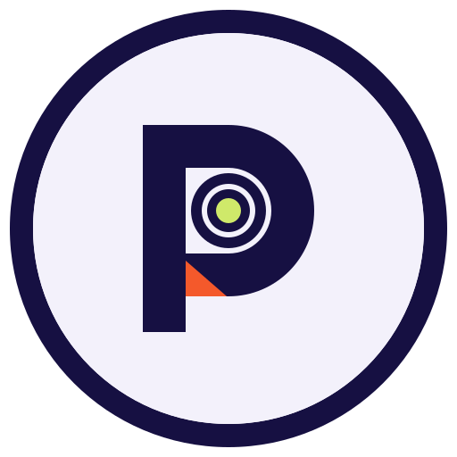

PERSPECTIVE STUDIO
USB Bridge.
Your USB. Anywhere.
Checking USB/IP runtime…
Installing the driver can briefly restart USB devices connected to this Windows PC. Finish any active USB file copies first.
Listening for Perspective USB Bridge on your network. You can still type the tablet IP manually.